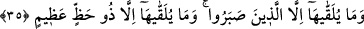

Artık ondan bir kötülük meydana gelmez.
Dostuna zorluk ve sıkıntı verirsen,
Yüzünü bir daha görmek istemez.
Eğer bir efendi, düşmanlarına iyilikle muamele ederse,
Çok geçmeden düşmanları dost olurlar.
Baklî şöyle der. Allah burada bize güzel ahlâk ile kötü ahlâkın bir olmadığını beyan
etmiş ve kötü ahlâkı güzel ahlâkla değiştirmemizi emretmiştir. Ahlâkın en güzeli hilm,
yumuşak huylu ve hoşgörülü olmaktır. Çünkü bu sâyede düşman dost, uzak yakın olur.
Zîrâ güzel ahlâk sahibi olan insan muhâtabının öfkesini iyi huylulukla, zulmünü affedici
olmakla, kötü arkadaşlığını ise lutuf, kerem ve iyilikle savar.
İbn Atâ şöyle der: Bizim hizmetimizi güzel yapanla hizmetimizden çıkıp edebi
beceremeyen bir değildir. Zîrâ yakınlık sahibinin hizmette kusur ederek edep dışı
davranması, uzak olanın kusuru ve edep dışı davranmasından daha ağır ve zordur. Câhil
ve bilgisizlerin büyük günahları affedilip hoş görülürken sıddıkların bir anlık hatâ ve
meyilleri cezâlandırılmaktadır.
35. Buna (bu güzel davranışa) ancak sabredenler kavuşturulur; buna ancak
(hayırdan) büyük nasibi olan kimse kavuşturulur.
“Bu güzel davranışa ancak sabredenler kavuşturulur;” Buna ancak (hayırdan)
büyük nasibi olan”; fazîlet ve rûhânî kuvvetlerden nasîbi büyük olan “kimse
kavuşturulur.”
Kötülüğü iyilikle önleme hasleti, nefsini intikam duygularından men ederek
sabredenlere verilir. Bunların hâli sabretmektir. Çünkü sabır, nefsi intikam
duygularından alıkor, men eder. Zîrâ intikamla meşgul olmak, ancak nefsî zâfiyetlerden
ve dış etkenlerden etkilenmekten dolayıdır. Nefsin cevheri kuvvetli olunca artık dış
etkenlerden etkilenmez. Böyle olunca da nefse tahammül zor gelmez ve intikamla
meşgul olmaz. Hulâsa kişi nefsini tezkiye etmelidir ki tatlı ve acı farksız; hoş ve nâhoş
eşit olsun. Âyette sabırları sebebiyle bu zümre medhedilmiştir. Haz, takdir edilen hisse
ve nasib demektir.
Cüneyd (k.s.) “buna ancak (hayırdan) büyük nasibi olan kimse kavuşturulur”
âyetini şöyle yorumlar: “Bu makamı elde etmeye ancak bu konuda hakkın inâyet ve
lutfundan büyük nasibi olanlar muvaffak kılınırlar.” İbn Atâ şöyle demiştir. Bu haslete
ancak Allah’a ve Allah’ın günlerine dâir mârifet sahibi olanlar kavuşturulurlar.